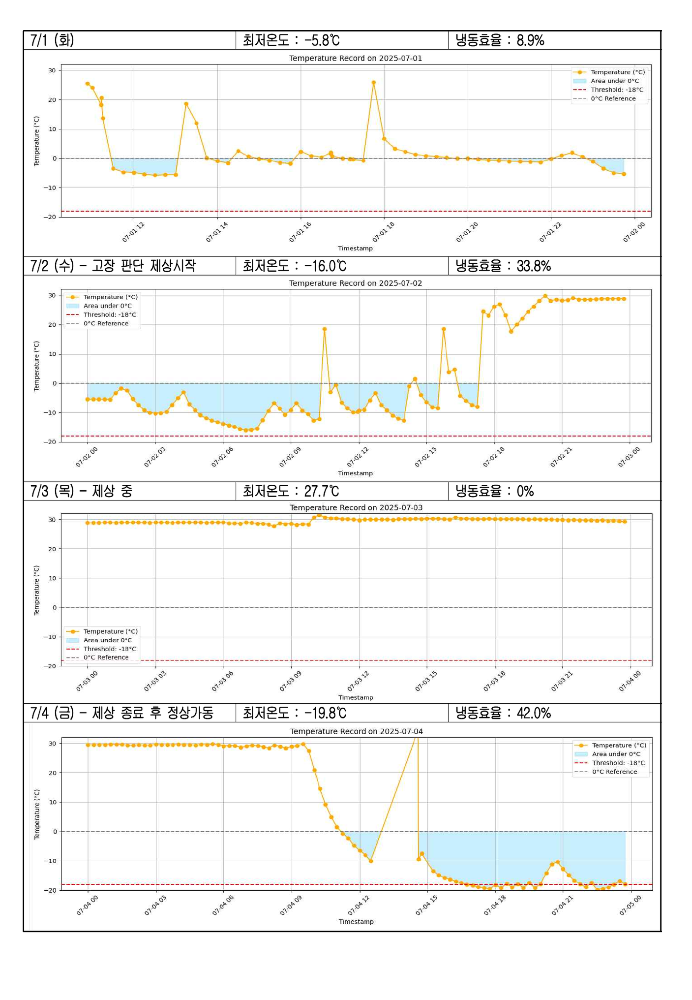
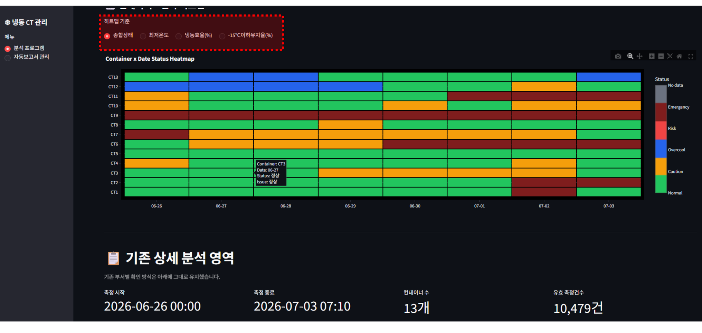
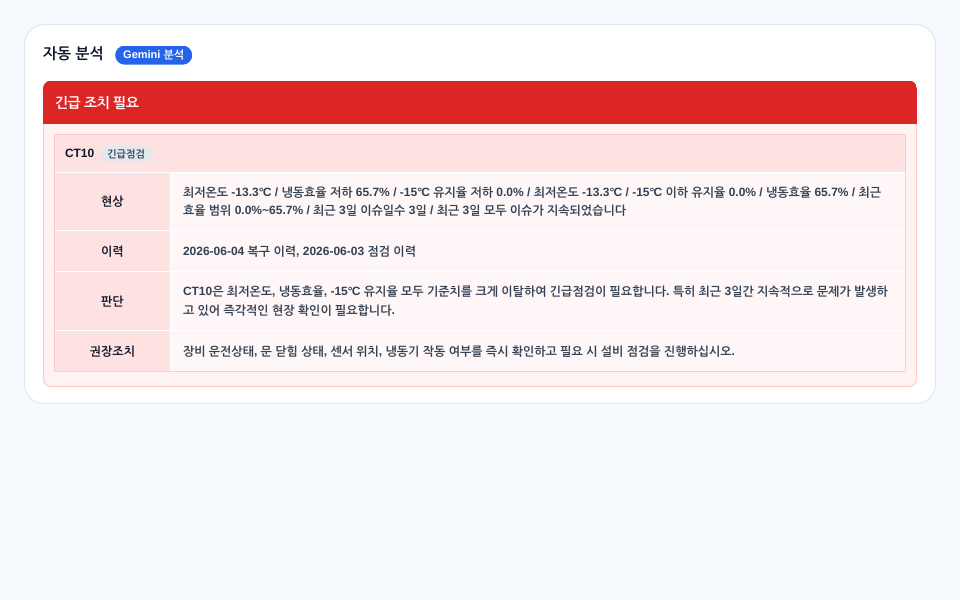
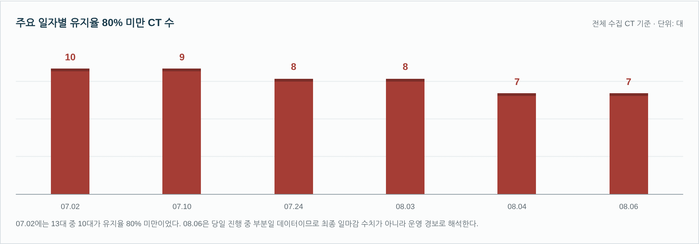
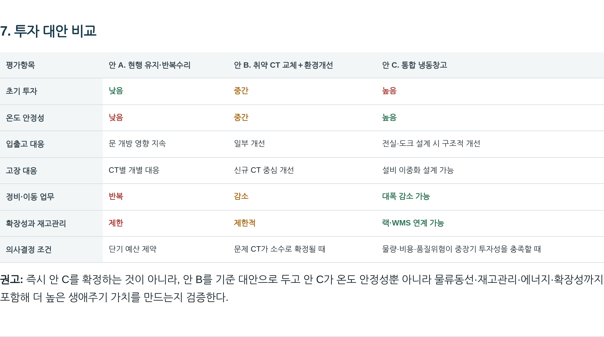

COLD-001 / 실제 화면
SEE THETRANSFORMATION.
5개의 실제 공개 화면으로, 온도 모니터링 문제가 비교 가능한 분석과 반복 운영 보고를 거쳐 여러 컨테이너의 위험 진단과 시설 개선 대안 검토로 확장된 과정을 보여줍니다.
01 / 발견 · 보이지 않던 상태
MAKE THE HIDDEN VISIBLE.
기존 모니터링만으로 충분히 보이지 않던 내부 상태를 별도 로거 측정으로 드러낸 첫 단계입니다.
범위 — 한 운영 조건에서 확인한 사례입니다. 전체 장비의 성능, 고장 감소 또는 사업 성과를 의미하지 않습니다.

원본 크기로 보기 ↗02 / 분석 · 여러 CT 비교
COMPARE STABILITY, NOT JUST LOWS.
한 대의 차트만 보는 방식에서 여러 컨테이너를 함께 비교하는 방식으로 확장했습니다. 최저온도와 일정 온도 이하를 유지한 비율을 따로 보며 안정성을 비교합니다.
범위 — 여러 CT를 비교하는 분석 화면이 있다는 것을 보여줍니다. 원인 관계, 사용 빈도, 사용자 수, AI 정확도 또는 사업 성과까지 입증하지는 않습니다.

원본 크기로 보기 ↗03 / 운영 · 분석에서 행동으로
ANALYSIS MUST LEAD TO ACTION.
현재 상태와 정비 이력을 함께 보고, 정해진 기준의 분석 결과 위에서 AI가 점검 맥락과 권장 조치를 정리합니다. 최종 현장 확인과 행동은 사람이 담당합니다.
범위 — 실제 발송된 운영 보고 내용을 원문 구조에 맞춰 렌더링한 자료입니다. 자율 진단·자율 정비·AI 정확도·측정된 사업 성과를 주장하지 않습니다.

원본 크기로 보기 ↗04 / 진단 · 여러 CT의 패턴
LOOK FOR PATTERNS, NOT ONE BAD CT.
여러 CT를 장기간 함께 분석해 “한 대가 고장났는가?”를 넘어 “여러 장비의 운영 패턴과 환경이 함께 나빠지는가?”를 살펴봅니다.
- 평일 유지율 차이
- 주말보다 11.1%p 낮음
- 여러 CT 동시 저하
- 20 / 41일 · 운영 CT 5대 이상이 유지율 80% 미만
- 최저온도만 보면 놓치는 경우
- 104 / 529 · 최저온도 ≤ -18℃이지만 유지율 < 80%
이 데이터에서 관찰한 값 — 사업 성과 KPI가 아닙니다. 사용한 온도·유지율 기준도 법규나 모든 식품에 적용되는 안전 기준으로 제시하지 않습니다.

원본 크기로 보기 ↗05 / 결정 · 개선 대안 비교
TURN ANALYSIS INTO OPTIONS.
진단은 화면에서 끝나지 않았습니다. 반복 수리, 취약 CT 선별 교체와 운영 환경 개선, 통합 냉동창고라는 세 가지 개선 대안을 비교하는 단계로 확장했습니다.
투자 범위 — 대안 비교까지는 자료가 지지합니다. 최종안 선택, 투자 승인, 공사 완료, ROI, 투자회수기간은 확정하지 않습니다.

원본 크기로 보기 ↗다음 단계